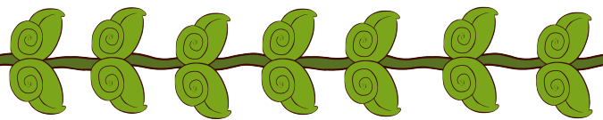

Grup was developed over multiple weeks, with multiple revisions. Below depicts our progress throughout this quarter.
We started with a brainstorm session and a Trello Kanban board. The next step was setting up our source control repo on Github. After that, we started talking about our ideas. We came up with concepts that we wanted to explore and test in Unity to see the feasiblity of being able to complete the work in the time allotted for the quarter.
We attempted to do an Agile sprint style design, but honestly, it just devolved into getting our assigned work done and picking up whatever we needed to in order to ensure we met deadlines and had a polished product. In that case, we were extremely lucky in having a very balanced team. We have someone who has spent a lot of time working with Unity, artists, an experienced coder, and someone who would keep us on track; the team balance was excellent for short-term project.
Next up was the Alpha Test. This is where we put our prototype ideas together for the first time and got to see the beginnings of our game. It may have just been colored blocks and Grup, but it was playable and we saw our concepts come to life. We created a couple levels and let our classmates give it a run! We took this information from their feedback and continued to refine the game.
These refinements plus more of the features and art we had finished became our Beta Test. We got over 20 people to run through the beta version of Grup and give us feedback, and give us feedback they did. We got lots of good feedback about the playability and feel of the game, but we'll go over that below in the "Playtesting" section. We took this information and polished the game even more and presented our pre-release version to the class and it was a hit.
And that's where we are... we would love to keep adding to Grup and we just might. We would like to keep refining it and complete the vision we had at the start of this. In the meantime, please enjoy the current released version of Grup and we hope it provides you with entertainment and some fun. -- Team Grup
As a team, we found that we worked really well together. Some of our biggest strengths are initiative, communication and work balance. A prime example for initiative was when we would get together and talk. Ideas that were tossed around would suddenly be shown within a couple days, whether it was technical or artistic. Communication was an interesting challenge due to the fact that our team never got meet in person. Despite that, leveraging tools like Discord, we were able to keep in touch actually very easily and talked multiple times a week to plan and discuss. Responses were always given and you never had to guess what people wanted. Lastly, we balanced work really well. Scott was able to handle all the special effects and shaders, Erica on the art and level design work, Shannon also contributed to the art and game mechanics, and Ed handled the game state mechanics, working with the Git repo, and general bug fixes.
As a team, we worked really well together!
If there was more time available to keep working on the game, our next few things we would want to implement are:
This is our final presentation that we did over Zoom for everyone who attended our last CSS 385 class.
Thank you to everyone who supported the creation and development of Grup! We hope you enjoy the game.